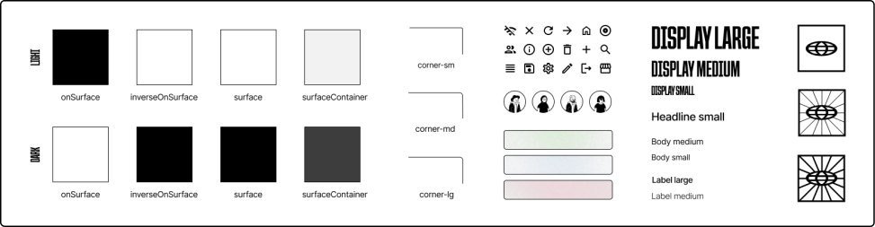
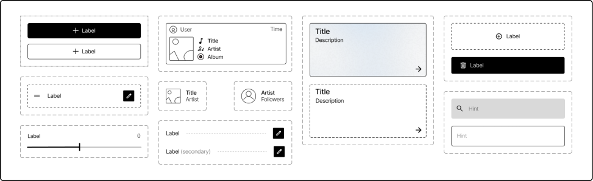
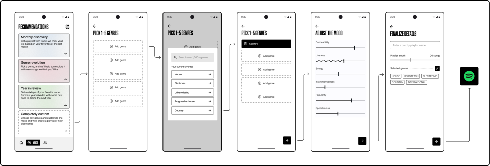
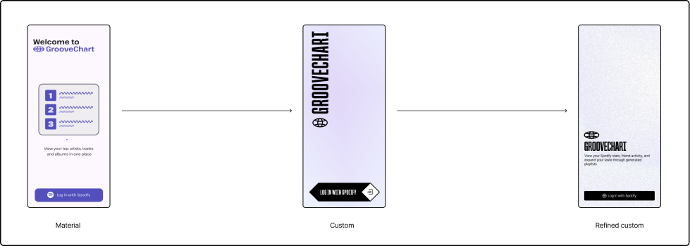
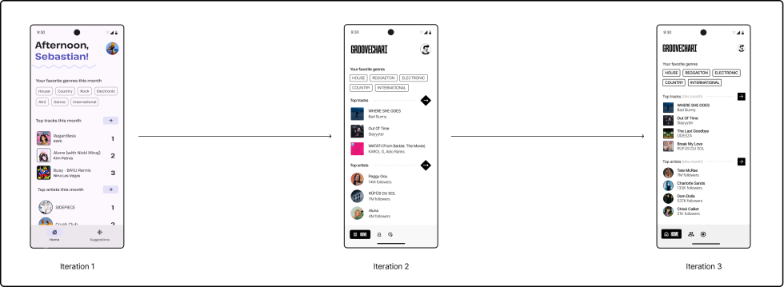

GROOVECHART
Android + iOS Application
February 2024 - Present

Motivation & Goals
Groovechart is a mobile application designed to be a companion to Spotify, allowing users to view stats about their listening activity year-round, see what their friends are listening to (since the official app currently lacks this feature on mobile), and create fine-tuned generated playlists to explore their music taste. My primary motivation to build this project was to further develop my skills in mobile development and design, with a focus on error handling, unit testing and modularization. The app is implemented natively for iOS and Android, includes a module of shared code using the Kotlin Multiplatform Mobile framework, and uses the Spotify API to access data about users’ listening activity.
Building a product identity
The design goal for this project was to create a bold and modern product whose usage was communicated primarily through visuals and layout. To accomplish this, I elected to use an expressive primary font with an easy-to-read sans-serif for body text, minimal theme colors to allow content to be highlighted, and comfortable spacing between elements to enhance clarity and usability.
During the design phase, I followed a design token first approach, beginning with the core foundations of the brand, including typography, color, shape, and iconography. By establishing these elements early on, I was able to build consistent, reusable components and then incorporate them into wireframes with greater efficiency. This workflow not only accelerated the process of creating mockups but also gave me hands-on experience with creating component variants and applying library styles in Figma, reinforcing my understanding of scalable design systems.
Development & multiplatform architecture
My approach to implementing this application was to use the Kotlin Multiplatform Mobile (KMM) framework, which enabled me to build both iOS and Android versions natively while sharing business logic through a common Kotlin module. I structured the shared code to handle networking and other core logic, while keeping UI-related code within the platform specific modules. In each variant, I also adopted the Model-View-ViewModel (MVVM) architecture to promote abstraction and maintainability. This framework was especially valuable for my learning process because I was able to gain hands-on experience with an industry standard toolset, and deepen my understanding of native iOS development. Since this was one of my first native iOS apps, leveraging a shared codebase helped reduce duplication and streamline the development process.
Generated playlist feature
The generated playlist feature is a core part of the app, enabling users to create playlists on demand whether made up of past favorites, new music they’re likely to enjoy, or a blend of both. While the app offers themed playlist suggestions, users can also take the “custom” route, which is great for those who know the vibe they are looking for but not the specific tracks. This path leverages the Spotify API recommendation endpoint, which supports a range of tunable parameters such as “danceability”, “energy”, and “popularity”. These can be adjusted using intuitive sliders, giving users control without overwhelming complexity. Once the playlist is finalized, users are seamlessly redirected to the Spotify app, where their personalized playlist is already saved and ready to play.
Iterative design process
To design this product, I followed an iterative approach that evolved through experimentation and user-centric considerations. The initial version leaned heavily on Material Design 3 guidelines, providing a familiar UI to start with. However, as the project progressed, I decided to establish a distinct visual identity, leading to the development of a custom design system which was tailored to better reflect the app's tone, personality and use case. This iterative process not only helped define the visual language of the app but also improved usability, reduced visual noise, and created a more memorable user experience.
Some key innovations to note across the design evolution is a shift to primarily monochromatic UI elements to be more content-focused, higher density of visual elements to allow for more information delivery, and ensuring sufficient contrast between elements for visual accessibility considerations.
Takeaways
This project was a valuable experience in mobile app development, allowing me to practice clean architecture, implement networking and authentication flows, and gain hands on experience with industry standard toolkits. One of the biggest challenges I encountered was designing the structure of the network service, more specifically, determining how to organize shared logic versus platform specific functionality. Deciding which pieces of code belonged in the shared module and which should remain within the native layers required careful consideration of maintainability, scalability, and platform constraints.